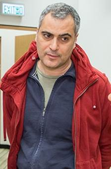

|
 |
Georgios
J. Fakas
Associate Professor (Docent) Department of
Information Technology Uppsala
University Hus 10, SE-752 37, Uppsala Sweden. Email:
georgios.fakas@it.uu.se Bio, Publications, PhD Supervision, Teaching, Funding |
Welcome
|
|
Välkommen
|
|
NEWS Final year projects. If you are interested in doing a database
project under my supervision, please have a look on my recent papers first.
See if you find them interesting to you then we can discuss a project. |
Biographical Notes
Georgios Fakas (Γεώργιος Φάκας, 佐治.法卡斯)
I am an Associate Professor (Docent) at the Department of Information Technology, Uppsala University. I am currently leading the Uppsala DataBase Laboratory (UDBL) within the Department of Information Technology. Before joining
Uppsala University, I worked as a Research Fellow at the Hong Kong University
of Science and Technology, Hong Kong University, EPFL (Lausanne,
Switzerland), UMIST (Manchester, UK), University of Cyprus (Cyprus). I also
worked as a Senior Lecturer at Manchester Metropolitan University (UK). I
have published papers in the most influential conferences and journals of
data management, including SIGMOD, PVLDB, VLDB Journal, IEEE TKDE, DKE, etc. Education. I obtained my Ph.D. in 1998, my M.Phil. in 1996 and my B.Sc. in
Computation in 1995; all from the Department of Computation, UMIST,
Manchester, UK. Research Interests. My research interests include (1) big data; (2) keyword search and
ranking on (semi) structure data and (attributed) graphs; (3) web search; (4)
online (geo) social networks. I am also interested in (5) workflow
management. Other
research interests also include Computers in Education, Distance and
Collaborative Learning. Awards. In 2023, I
received an International Sabbaticals
grant from Teknat (Disciplinary Domain of Science and Technology, Uppsala
University) which was hosted by Boston University, USA. In 2009, I
received the fellowship Hosting of Experienced
Researchers from Abroad from the Research Promotion Foundation (RPF),
Cyprus which was hosted by the University Of Cyprus, Cyprus. In 2001, I was
awarded the ERCIM (European Research Consortium in Informatics and
Mathematics) Fellowship which was hosted by the Swiss Federal Institute of
Technology - Lausanne (EPFL), Switzerland. Current funding
eSSENCE, Sweden. Principal
Investigator for the project “Data-intensive
analytics for discovering critical minerals using Machine Learning”, Call for
PhD projects in the eSSENCE graduate school in data-intensive science 2024. In collaboration
with www.streamanalyze.com (Tore
Risch) and www.smartexploration.se
(Bjarne
Almqvist). Professional Activities. Member of
Programme Committees: 2026: ACM SIGMOD, ADBIS
(European Conference on Advances in Databases and Information Systems) 2025: ACM SIGMOD 2024: PVLDB. 2023: PVLDB. 2021: ACM SIGMOD,
EDBT. 2020: ACM SIGMOD,
IEEE ICDE. 2019: ACM SIGMOD, SSTD,
WISE, IEEE/ACM WI’19. 2018: HDMS, WESOACS. 2010: HDMS. 2005: HICSS 2001: ACM SAC. Chair: 2022: MDM Demos. Frequent
Reviewer for: IEEE TKDE, VLDBJ
(Elsevier), IS (Elsevier), DKE (Elsevier), IST (Elsevier). Current: (1) Hedaya Alyousif (2025), co-supervision with Bjarne Almqvist
and Christian Schiffer (www.smartexploration.se). (2) Yang Yang
(2025) (funded by).
Completed
at UU: (4) Georgios
Kalamatianos (Dec 2022), (3) Khalid Mahmood (Jan
2022). Completed at MMU: (2) Zhi Cai was my second PhD student (completed his PhD in 2011). Dr. Cai is currently a Lecturer at the Beijing University of Technology, China. (1) Ben Cawley was my first PhD student (completed his PhD in 2008). Dr. Cawley's first employment was in a start up company in the U.K. Database
Design I, 5.0c, Course code: 1DL301 Database
Design II, 5.0c, Course code: 1DL400 Selected Publications
G. J. Fakas, G. Kalamatianos, Proportionality on Spatial Data
with Context, ACM Transactions on
Database Systems (TODS), 2023. G. Kalamatianos, G. J. Fakas, N. Mamoulis, Proportionality in Spatial Keyword Search, Proceedings of the ACM Conference on the
Management of Data (SIGMOD), 2021. (Mp4, ppt) C. Zhi, G. Kalamatianos, G. J. Fakas, N. Mamoulis, D. Papadias, Diversified
Keyword search on spatial RDF data,
Very Large Data Bases Journal
(VLDBJ), 2020. G. J. Fakas, Z. Cai, Object Summaries for
Keyword Search, Encyclopedia with Semantic Computing and Robotic
Intelligence, Volume 2, No. 2, pp 1-20, 2018. G. J. Fakas, Y. Cai, Z. Cai, N. Mamoulis, Thematic Ranking of Object Summaries
for Keyword Search, Data & Knowledge Engineering (DKE),
Elsevier, Volume 113, pp 1-17, 2018. (ppt) G. J. Fakas, Z. Cai, N. Mamoulis, Diverse and
Proportional Size-l Object Summaries Using Pairwise Relevance, Very Large Data Bases
Journal (VLDBJ), 2016. (ppt) E. Schiza, G. J. Fakas, C. S. Pattichis, N.Petkov,
C. N. Schizas, Security
Issues Of Integrated Electronic Health Records (EHRs), MEDICON, 2016. G. J. Fakas, Z. Cai, N. Mamoulis, Diverse and
Proportional Size-l Object Summaries for Keyword Search, Proceedings of the ACM Conference on the Management of Data (SIGMOD), 2015. R. Ahuja, N. Armenatzoglou, D. Papadias, G. J.
Fakas, Geo-Social Keyword Search, Proceedings of the International Symposium on
Spatial and Temporal Databases (SSTD), Seoul, Korea, August 26-28, 2015. G. J. Fakas, Z. Cai, N. Mamoulis, Versatile Size-l Object Summaries for Relational Keyword Search, IEEE Transactions on Knowledge and Data Engineering (TKDE), Volume 26, No. 4, pp
1026-1038, 2014. G. J. Fakas, Z. Cai, N. Mamoulis, Size-l Object Summaries for Relational Keyword Search, Proceedings of the VLDB
Endowment (PVLDB), Volume 5,
Issue 3, pp 229-240, 2011. G. J. Fakas, B. Cawley, Z. Cai, Automated Generation of Personal Data Reports from Relational
Databases, Journal of Information and Knowledge Management (JIKM),
World Scientific, Volume 10, Issue 2, pp 1-16, 2011. G. Fakas, Automated
Generation of Object Summaries from Relational Databases: A Novel Keyword
Searching Paradigm, Data & Knowledge Engineering (DKE),
Elsevier, Volume 70, Issue 2, pp 208-229, 2011. G. Fakas, Z. Cai, Ranking of Object
Summaries, DBRank Workshop 2009, ICDE 2009. B.
Karakostas, G. Fakas, An Architecture for Reliable Mobile Workflow in a
Grid Environment, Fourth International Conference on Internet and Web
Applications and Services, Venice, May 2009. G. Fakas, Automated
Generation of Object Summaries from Relational Databases: A Novel Keyword
Searching Paradigm, DBRank Workshop 2008, ICDE 2008. (Presentation, Demo) E. Kyriacou, G.
Fakas, V. Pavlaki, A Completely Decentralized
Workflow Management System for the Support of Emergency Telemedicine and
Patient Monitoring, 28th IEEE
EMBS Annual International Conference, Aug 30-Sept. 3, 2006, New York City,
New York, USA. G. Fakas, A. V. Nguyen and D. Gillet, The Electronic Laboratory Journal: A Web-Based Collaborative Environment for Remote Experimentation, Computer Supported Cooperative Work (CSCW): The Journal of Collaborative Computing, Kluwer Academic Publisher, Volume 14, Number 3, pp 189–216, 2005. G. Fakas, I. Lamprianou, A.
Andreou, M. Pampaka, C. Schizas, The Evaluation of Cultural Journeys in the
Information Society (CJIS) Environment as an Educational Aid, Computers & Education Journal, Elsevier,
Volume 45, Issue 1, pp. 123-139, 2005. G. Fakas, B. Karakostas, A Peer to Peer Architecture for Dynamic Workflow Management, Information and Software Technology Journal,
Elsevier, Volume 46, Issue 6, pp
423-431, 2004. G. Fakas, A. Kakas, C. Schizas, Electronic Roads: Intelligent Navigation Through Multi-Contextual
Information, Knowledge and
Information Systems, International Journal, Springer, Volume 6, Issue
1, pp. 103–124, 2004. B. Karakostas, D. Panayiotakis, G. Fakas, Workflow Requirements Modelling Using XML, Requirements Engineering Journal, Springer, Volume 7, Issue 3, pp 124-138, 2002. |